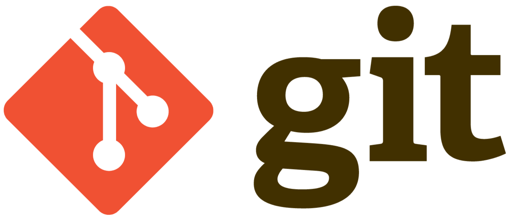
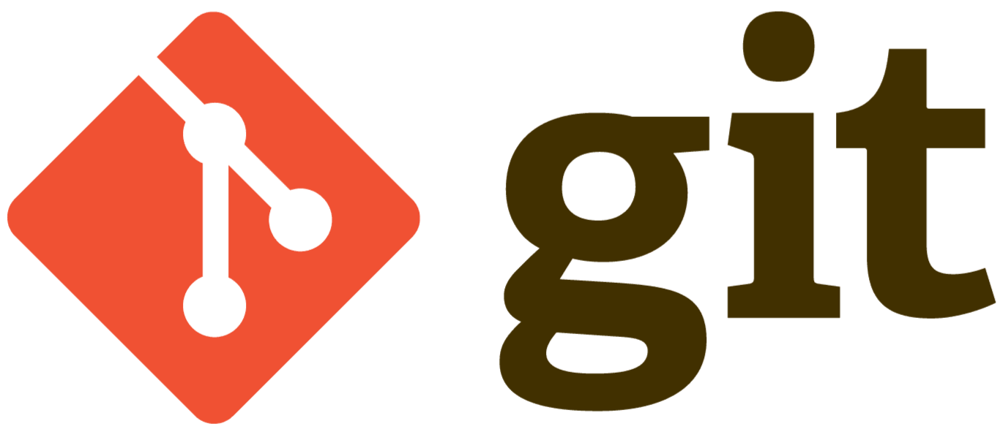
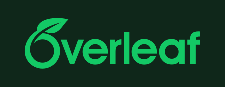
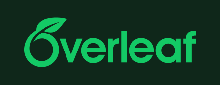
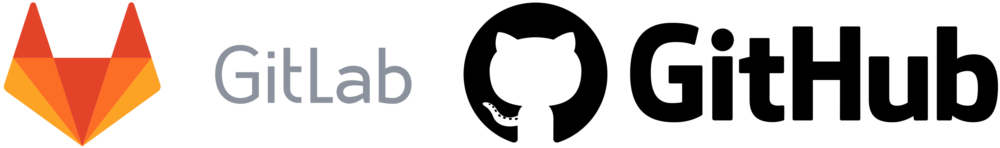
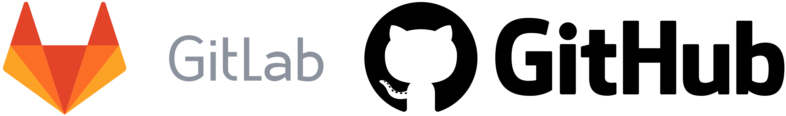
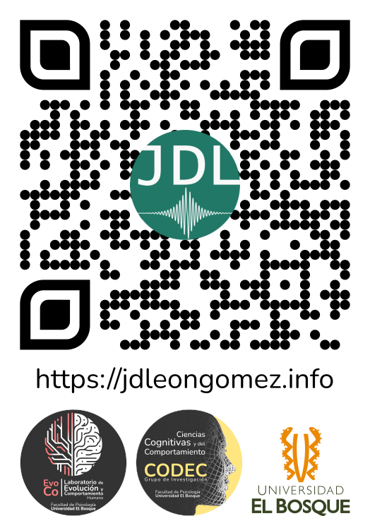

MetaCiencia: Ciencia Abierta, Reproducibilidad y Transparencia
¿Cómo enfrentamos los retos de la ciencia?
📲 Accede a las diapositivas en línea

1.1 ¿Por qué es tan difícil generar conocimiento confiable?
¿Si mi gato hace más pataletas, sueño más con empanadas?

1.1 ¿Por qué es tan difícil generar conocimiento confiable?
¿Si mi gato hace más pataletas, sueño más con empanadas?

1.1 ¿Por qué es tan difícil generar conocimiento confiable?
¿Si mi gato hace más pataletas, sueño más con empanadas?

1.1 ¿Por qué es tan difícil generar conocimiento confiable?

1.1 ¿Por qué es tan difícil generar conocimiento confiable?

1.3 El filtro de significancia

3.2 Software libre y reproducibilidad
Entornos con R / Python y control de versiones
| |
|  | | | 
| | | Documentos reproducibles (Quarto, R Markdown)
| |
|  | 
| Repositorios abiertos (OSF, GitHub, Zenodo)
 |  |
|  |
4.2 Reportes Registrados (Registered Reports - RRs)
¿Qué es un reporte registrado?

Parte 5 · De la teoría a la acción: Semillero MetaCiencia
¡Gracias!
¡Gracias!

Juan David Leongómez PhD, MSc
jleongomez@unbosque.edu.co